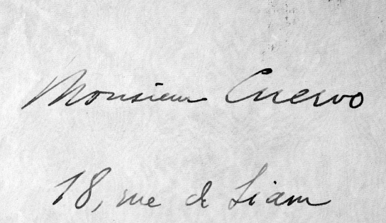

Salud. La salud de don Rufino por lo general no fue buena. Especialmente en los últimos veinte años se quejaba continuamente en sus cartas de enfermedades de las vías respiratorias: catarros, resfriados, fuertes bronquitis, males de garganta. Sufre de reumatismo, postración, cansancio cerebral, surmenage, neurastenia, molestia en los ojos, cualquier trabajo le fatiga la cabeza, dice que él está hecho un puro carcamal. No creía en los médicos: en cuanto a medicina era, dice él, como algún literato de por allá que decía ser ateo en política; al final creía más en la homeopatía que en lo que él llamaba asesinopatía[1]. Pero en medio de sus males, no le tenía miedo a la muerte: “no se figure, escribe a Pombo, que soy hombre de ponerme a examinar mi pulso. Ruego a Dios que me dé buena muerte; procuro no alejarla ni acercarla, y que se haga lo que Él disponga”[2].
Sánscrito. Respecto al sánscrito Pedro Urbano González de la Calle escribió en el Boletín del Instituto Caro y Cuervo, un artículo titulado “Formación general lingüística del maestro don Rufino J. Cuervo” donde hace un elogio de la formación lingüística de Cuervo, iniciando por el conocimiento del sánscrito que debía tener el maestro y que se manifiesta en algunas de las etimologías propuestas para cada artículo del Diccionario. Con paciente interés Pedro Urbano escudriñó el Fondo Cuervo de la Biblioteca Nacional, y con esmerado empeño transcribió en la nota 2 de este artículo, más de una veintena de registros bibliográficos relacionados con sánscrito y temas afines, entre ellas “dos preciosas y aun valiosísimas Crestomatías” y además nos señala “Y no olvidemos que la larga estancia de Cuervo en París, proporcionaría al sabio maestro bogotano dichosas oportunidades de frecuentar las aulas de la Sorbona, del Colegio de Francia, de la Escuela de lenguas orientales y de la Escuela de Altos Estudios, centros superiores de cultura, en los que por la época a que se refieren nuestros supuestos, hubo siempre insignes profesores de la lengua sánscrita”[3].
Seco, Manuel. Uno de los más célebres lexicógrafos españoles contemporáneos. Miembro de Honor de la Academia Colombiana y del Instituto Caro y Cuervo. En sus Estudios de lexicografía española dedica un capítulo a “La crítica de Cuervo al Diccionario de la Academia Española”, del que queremos rescatar las palabras finales: “Termina aquí nuestra revisión de las reflexiones que, hace más de cien años, suscitó a Rufino José Cuervo el examen de la entonces última edición del Diccionario académico. Hemos visto cómo en ellas brillan la lucidez, el buen sentido y el profundo conocimiento de la lengua que son peculiares del “maestro excelente y superior del habla de Castilla” como le llamó en 1888 Juan Valera. En general, estas observaciones se adelantan netamente a lo que era usual en la lexicografía de su tiempo, y algunas de sus propuestas fueron adoptadas, con más o menos celeridad, por la Academia Española, a quien iban dirigidas. Pero otras quedan “del salón en el ángulo oscuro”, con su intacta modernidad, esperando al lexicógrafo que sepa leerlas”[4].
Segunda Conferencia Panamericana. La Segunda Conferencia reunida en México, en su sesión del 30 de enero del año 1902, acogió un convenio firmado por varias delegaciones “para recomendar a sus respectivos gobiernos que se suscriban con Frs. 210. 000 para la edición completa del ‘Diccionario de construcción y régimen de la lengua castellana’ ”[5]. En dicho Convenio se fijaron las sumas correspondientes a cada país y se recomendó al Gobierno de México “tenga a bien encargarse de la realización de este pensamiento, recabando el importe de las suscripciones, suministrando los fondos al autor de la obra y distribuyendo los ejemplares entre los Gobiernos contribuyentes”[6].
Selección de autores. El criterio de selección de autores para los ejemplos del Diccionario está condensado en la Introducción de donde extraemos el siguiente párrafo: “Aunque también es cierto que desde el momento en que uno acomete la áspera tarea de apoyarse en textos ajenos, no irá á buscar frases triviales de escritores adocenados; antes bien comenzará por agotar las obras más excelentes, que precisamente lo son por envolver altos pensamientos en los términos más adecuados. Llamarán en primer lugar su atención aquellas que por largo tiempo han corrido con aceptación general, porque tal circunstancia es prenda de que la nación mira en ellas un reflejo exacto de su espíritu y de su manera de concebir y expresar las ideas; esta primacía la han tenido en nuestra literatura autores como Cervantes, Lope, Mariana, los Argensolas, los tres Luises (de Granada, de León y de Puente), Mendoza y Ercilla. Luego entrarán aquellas obras en que la opinión común de los doctos reconoce mérito singular, aunque por cualquier circunstancia hayan permanecido olvidadas ú oscurecidas por algún tiempo, como ha sucedido con las de Tirso, Alarcón, Melo, Moncada. Después vendrán otras que, habiendo gozado de grande aplauso en su tiempo, ejercieron por el mismo hecho una poderosa influencia y dejaron visibles huellas en el idioma, por más que el buen gusto no apruebe hoy del todo su estilo y lenguaje; entre éstos se cuentan los culteranos y conceptistas como Góngora y Solís”[7].
Sello postal. El Ministerio de Tecnologías de la Información y las Comunicaciones le brindó un merecido homenaje a R. J. Cuervo, en este 2011 declarado por el Ministerio de Cultura como el “Año de Cuervo” con la emisión de cerca de 300. 000 sellos postales que llevarán su efigie por todo el país y por todo el mundo. La estampilla de 30 x 40 milímetros tiene un valor facial de $ 5. 000 (cinco mil pesos), y está impresa en policromía en trama estocástica y con una presentación de 24 unidades por pliego. La imagen representada corresponde a una adaptación del logo oficial del “Año de Cuervo”, que se inspiró, a su vez, en un retrato original del maestro.
Sentido del humor. En medio de su seriedad, Cuervo tenía un fino sentido del humor, que brotaba naturalmente en la conversación y en algunas de sus cartas. Veamos esta observación que de buena gana más de uno estaría dispuesto a escribir: “las mujeres, la polilla y los bibliófilos son los enemigos de los libros”[8]. A don Luis Lleras le escribía: “si U. me pregunta qué tal es el baño de mar, le diré que es una porquería agradabilísima”[9]. Con un humorismo insólito dice “Cierto que las canciones bohémicas son primorosas: ¡cómo siento que las musas me sean tan esquivas. Hembras habían de ser! Sin eso, aún sentiría la tentación de poner mano en ellas (en las canciones digo) y vertirlas a la castellana”[10]. De su ama de llaves Cuervo decía que era “el más honorable ciudadano francés con quien había tratado”[11].
Sentimiento patrio. Cuervo, contra lo que muchos piensan, no dejó de preocuparse un momento por su patria. La sentía en el fondo de su alma, le dolían las guerras civiles que aniquilaban el país, para el cual anhelaba la paz y el progreso. Don Rufino fue conservador, pero nunca le entusiasmó el movimiento político llamado de la regeneración. Adelantándose a los tiempos, no veía más remedio para el país que un partido republicano. Una sola vez votó en su vida, siendo gobernador de Cundinamarca, Aldana; como en la urna que él había votado, había mayoría conservadora, el alcalde, antes de comenzar el escrutinio, la vació en el caño de la esquina del Capitolio. Pero agrega: “voto y votaré mientras tenga vida, contra la violencia y el insulto del que mande, cualquiera que sea el título con que ejerza el poder”. Estaba convencido, y con mucha razón, de que la Iglesia no podía aliarse con un partido político y de que la intromisión del clero en política era funesta[12]. Es simbólica la expresión de las Apuntaciones: “Nada, en nuestro sentir, simboliza tan cumplidamente la Patria como la lengua: en ella se encarna cuanto hay de más dulce y caro para el individuo y la familia, desde la oración aprendida del labio materno y los cuentos referidos al amor de la lumbre hasta la desolación que traen la muerte de los padres y el apagamiento del hogar”[13].
Sexta Conferencia Panamericana. Reunida en La Habana en 1928, dispuso, entre otras cosas, que se suscribiese por las distintas naciones una suma total de $42.000 oro “para la edición completa de 1.200 ejemplares del Diccionario de construcción y régimen de la lengua castellana compuesto por don Rufino José Cuervo”[14]; encargó a la Unión Panamericana efectuar la recaudación de las sumas suscritas y le concedió autorización para adelantar las gestiones necesarias para la publicación de la obra. Finalmente, hizo a esta misma entidad la recomendación de que promoviera “los medios de asegurar por anticipado la mejor acogida a lingüistas de reconocida pericia que intenten proseguir en forma científica la obra filológica de don Rufino José Cuervo hasta su terminación”[15].
Silva, José Asunción. Aunque Rufino José era 21 años mayor que José Asunción Silva, hubo entre nuestros personajes una hermosa y cordial amistad. Siendo niño, Silva acompañaba a su padre a las frecuentes tertulias que se hacían en la casa de los Cuervo. Siendo muy joven Silva viajó a Europa durante dos años, por asuntos comerciales, que aprovechó muy bien en conocer los movimientos literarios. En París visitó con frecuencia a Rufino José, y luego fueron varias las cartas que se cruzaron. El poeta conocía y valoraba el trabajo de Cuervo, pero también advertía el esfuerzo y tiempo que requiere un diccionario como el de construcción y régimen, por eso le escribe en abril de 1899: “Siempre recuerdo con placer nuestras noches de su casa y la acogida cordial y encantadora que encontré en ella. Crea Ud. que cuando así lo recuerdo y pienso en la labor obstinada y enorme de su vida, consagrada a una obra digna de ella le pido a Dios, muy de veras, porque le dé a Ud. fuerzas para coronarla”[16]. En Caracas, Silva ocupa parte de su tiempo libre en difundir la obra de Cuervo, en la carta de noviembre de 1894, le dice: “Quiero hacer sonar los nombres colombianos que honran a Colombia, por estas regiones. ¿Dejando Ud. Por un instante su modestia aparte, cree Ud. Que hay algo que yo pueda hacer conocer con más entusiasmo que sus libros?… En todo caso Ud. Verá en estas líneas el sentimiento que me las dicta: mi entusiasmo por Ud. y por su obra colosal”[17].
Suárez, Marco Fidel. Suárez siempre hizo público elogio de la obra de Cuervo. Fuera de ser colaborador en las tareas del Diccionario de Cuervo, escribió de él lo siguiente: “Rufino José Cuervo fue un hombre íntegro y cabal, un sabio y a la vez un ejemplar de virtudes, una estatua modelada por la bondad y el saber en el mármol de la fama; y personificando del modo más exacto y más feliz las buenas cualidades que más distinguen nuestro genio nacional, destelló en el centro de la civilización universal, luz para las letras y la ciencia y honra para su patria”[18].
Surgimiento de la idea del diccionario. La genial idea de la elaboración de un diccionario sintáctico nace sencillamente de darse cuenta de la frecuencia con que los hablantes de español nos encontramos con problemas acerca del régimen especial de ciertos verbos y el uso de las partículas adecuadas, problemas que ni las gramáticas ni los diccionarios comunes están en condiciones de resolver. Cuervo conocía perfectamente la Gramática de Bello que en su parágrafo 750 dice: “Por estas muestras puede conocerse la variedad que en orden a las construcciones activas ha presentado y aún presenta la lengua y la necesidad de estudiarlas en los diccionarios y en el uso de los autores correctos”[19]. Es posible que de esta referencia hubiera subrayado la idea de estudiar el tema en un diccionario usando autoridades. Pudo también surgir la idea de la atención que prestó a la sugerencia de su amigo Uricoechea, cuando comentaba en una de sus cartas la Muestra de un diccionario, que apareció en 1871. Al respecto decía Uricoechea: “Una cosa desearía ver en el [diccionario] de Uds., y es el régimen de cada verbo: no conozco trabajo alguno sobre la materia en nuestra lengua sino un mal apéndice a una gramática publicada por Hachette para uso de franceses que desean aprender el castellano y creo que U. se habrá apercibido de la ignorancia de muchos escritores en la materia”[20]. De aquí pudo surgir tanto el nombre del Diccionario, como la certeza de la ausencia de estudios sobre el tema en forma organizada y la seguridad de hacer una obra plenamente original.
* * *
[1] aec, vii, 250.
[2] aec, vii, 359.
[3] González, en Bicc, 1945, 217.
[4] Seco, 1987, 192-193.
[5] Thesaurus, 1958, 1-2.
[6] Thesaurus, 1958, 1-2.
[7] Cuervo, dcr, 1994, i, xl.
[8] aec, xiii, 199.
[9] aec, iii, 86.
[10] aec, i, lii.
[11] Anuario, xi, 172-173.
[12] aec, vii, lxxvi - lxxviii.
[13] Cuervo, Obras, 1987, t. ii: 6.
[14] Thesaurus, 1958, 1-2.
[15] Thesaurus, 1958, 2.
[16] aec, xxi, 90.
[17] aec, xxi, 103.
[18] Anuario, xi, 152.
[19] Bello, Gramática, §750, 1936, 197.
[20] aec, x, 45.
